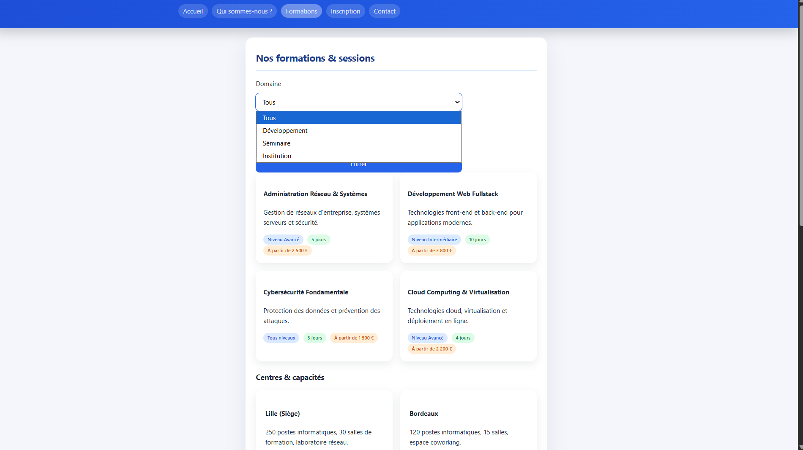

1
Contexte et analyse du besoin
L'entreprise fictive MFC avait besoin d'un site web vitrine et fonctionnel pour présenter ses services et gérer ses données clients. Le projet a nécessité une phase d'analyse préalable pour définir les fonctionnalités et l'architecture.
- Rédaction d'un cahier des charges fonctionnel
- Conception de plan du site
- Modélisation de la base de données (MCD)
- Répartition des tâches et planification du projet

Maquette du site MFC réalisée en phase de conception.